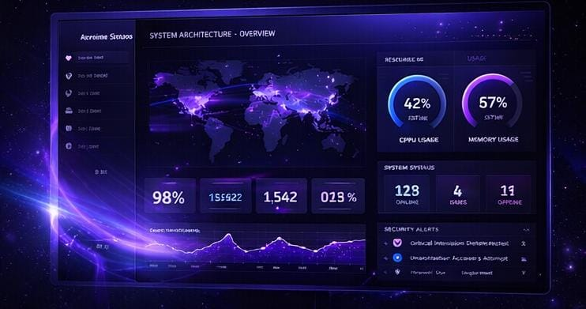
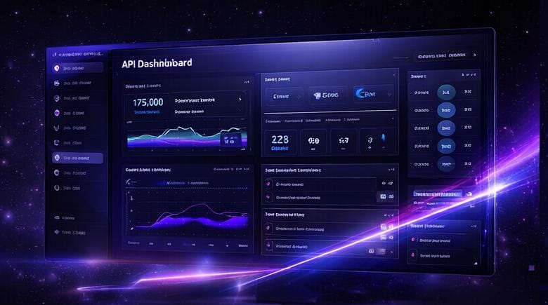

A Turing Systems entendeu exatamente o que a NovaPulse precisava e entregou um sistema que simplificou toda a nossa operação digital.
Mariana Lopes
NovaPulse

Projetamos e desenvolvemos sistemas digitais sob medida que aceleram operações, escalam junto com o seu negócio e fortalecem sua presença no mercado.
Ferramentas modernas, testadas em produção e escolhidas conforme a necessidade real de cada projeto — nunca por modismo.
Projetamos e desenvolvemos sistemas digitais de alta performance para empresas que operam em outro nível.

Planejamento técnico da solução para garantir organização, escalabilidade e segurança desde o início.

Criação de sites, páginas institucionais e sistemas personalizados com foco em desempenho e experiência do usuário.

Conectamos ferramentas, APIs e processos para reduzir tarefas manuais e aumentar eficiência operacional.

Ajustamos estrutura, carregamento e estabilidade para que sua solução funcione com rapidez e confiança.
Um processo claro do primeiro contato até a entrega — e além dela.
Entendemos seu negócio, seus processos e os problemas reais que o sistema precisa resolver.
Desenhamos a solução técnica: estrutura, integrações, segurança e plano de escalabilidade.
Construímos em ciclos curtos, com entregas incrementais e validação constante com você.
Acompanhamos o sistema em produção, com suporte, monitoramento e melhorias contínuas.
Não vendemos código. Entregamos sistemas em que o seu negócio pode confiar.
Práticas de desenvolvimento seguro, criptografia de dados sensíveis e revisão de código em cada entrega.
Acompanhamento próximo do projeto, sem intermediários, com relatórios claros de progresso.
Arquitetos, desenvolvedores e especialistas em infraestrutura trabalhando juntos desde o primeiro dia.
Sistemas pensados para crescer junto com a operação do seu negócio, sem retrabalho.
Manutenção e evolução do sistema após o lançamento, com prazos de atendimento bem definidos.
Stack moderna, testada e documentada — sem dívidas técnicas escondidas debaixo do tapete.
Conheça alguns exemplos fictícios de empresas que confiaram na Turing System para modernizar sua presença digital e aprimorar seus processos.
Desafio: melhorar a presença online e organizar o atendimento.
Solução: desenvolvimento de um site moderno e otimização dos processos digitais.
Resultado: mais profissionalismo, eficiência e novos clientes.
Desafio: tornar a operação digital mais prática e coerente com a qualidade da empresa.
Solução: reestruturação da apresentação digital e melhoria no contato com clientes.
Resultado: mais confiança, competitividade e agilidade.
Desafio: comunicar soluções com mais clareza e fortalecer a imagem da marca.
Solução: criação de um ambiente digital mais atrativo, organizado e eficiente.
Resultado: melhor comunicação e mais credibilidade no mercado.
A Turing Systems entendeu exatamente o que a NovaPulse precisava e entregou um sistema que simplificou toda a nossa operação digital.
O processo foi transparente do início ao fim. A equipe técnica entendeu nossa operação de logística melhor do que esperávamos.
Profissionalismo do primeiro contato à entrega. Hoje nosso ambiente digital realmente representa a qualidade do que fazemos.
Conte um pouco sobre o seu projeto e receba uma proposta personalizada, com escopo, prazo e investimento estimado.